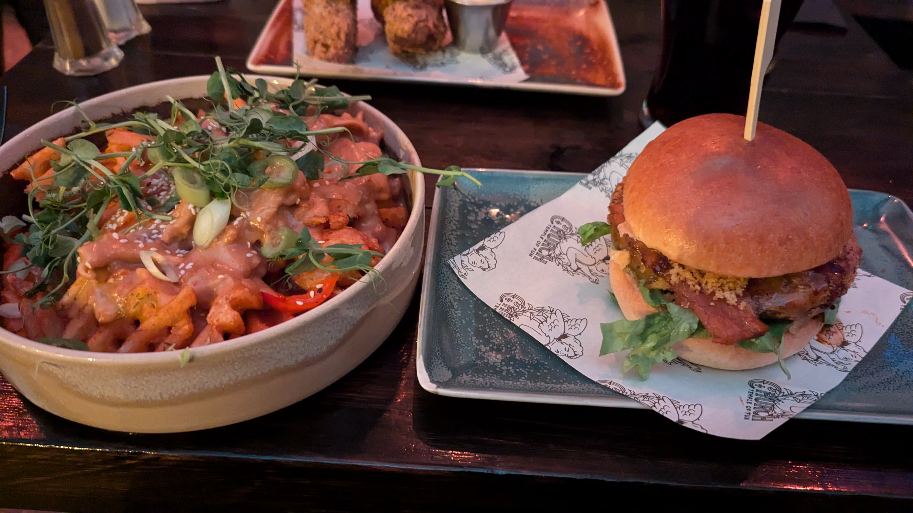
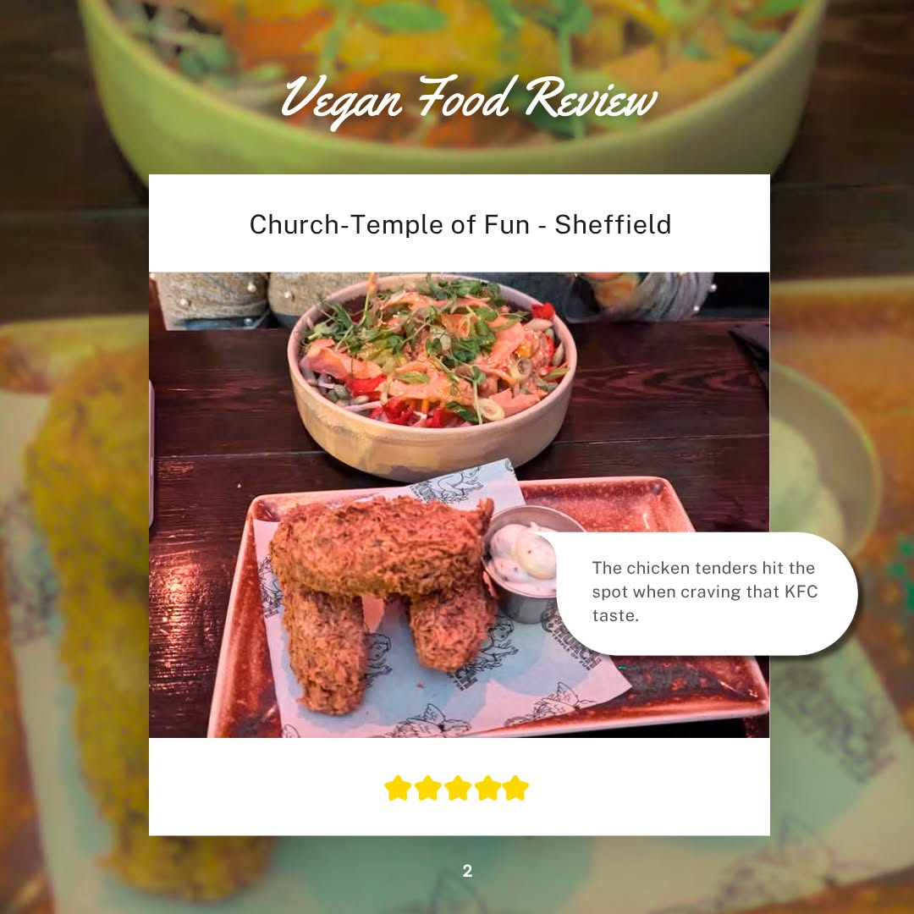
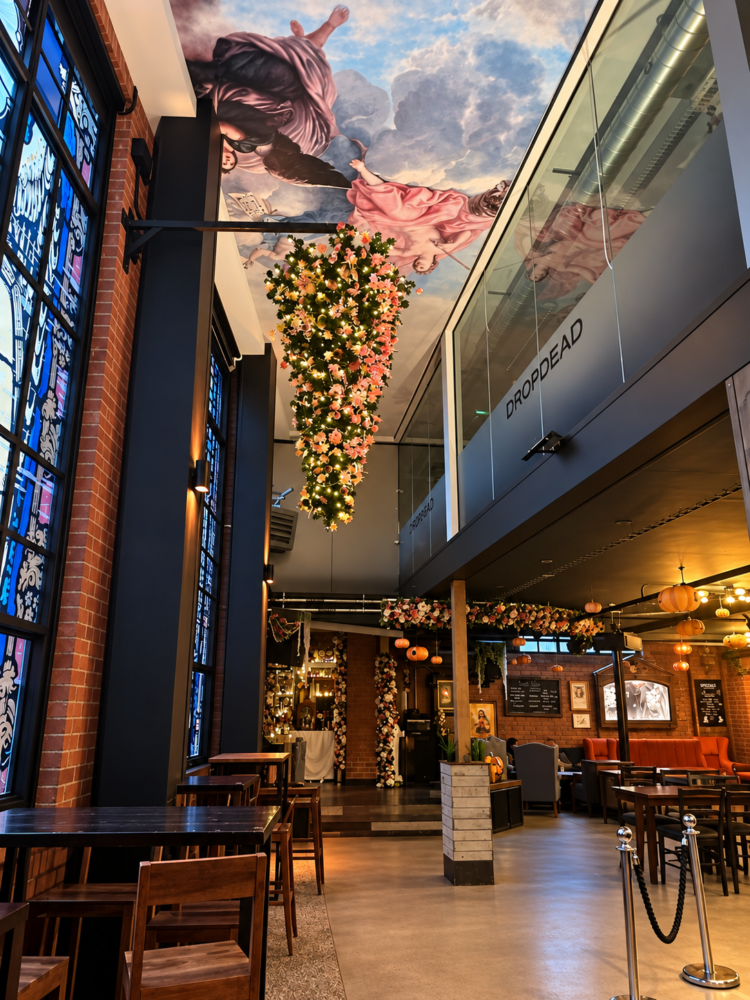

Temple of Fun in Sheffield delivers an unforgettable vegan dining experience with a truly unique atmosphere. The moody, low-lit aesthetic sets the perfect tone, complete with free-to-use gaming booths that add a great interactive element to the night. It sits a bit outside the city centre, so factor in travel time—we opted for a taxi to avoid any parking guesswork.
The menu playfully uses traditional meat terms like "chicken," which prompted my usual double-check, but the exceptionally friendly staff quickly reassured us that everything is 100% vegan. They were happy to answer all our questions, and our food arrived fast and piping hot.
Fair warning: the portions are huge! We let our excitement get the better of us and ordered far too much, but the staff happily provided boxes so we could finish the feast at home. If you love proper vegan comfort food, this is the place.
Tip: Because it is so popular, booking in advance is absolutely essential to avoid missing out.


